An interactive guide to understanding airway anatomy, anatomical variations, and pathological conditions as visualized through rigid bronchoscopy.
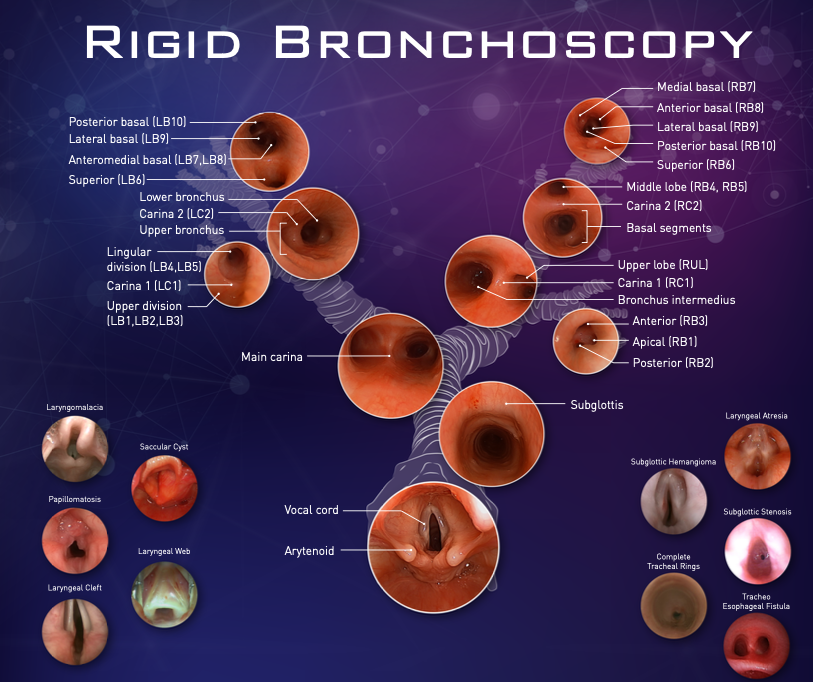
Rigid bronchoscopy provides direct visualization of the airway from the larynx through the main bronchi and into the segmental divisions. This comprehensive view is essential for:
Understanding normal airway anatomy and its variations is crucial for accurate diagnosis and safe therapeutic interventions. The bronchoscopic view provides real-time assessment of airway patency, mucosal integrity, and structural abnormalities.
| Region | Key Features |
|---|---|
| Larynx | Vocal cords, arytenoids, subglottis |
| Trachea | Main carina, C-shaped cartilage rings |
| Main Bronchi | Right (shorter, wider) and Left (longer, narrower) |
| Lobar Bronchi | Upper, middle (right), and lower lobes |
| Segmental Bronchi | 10 segments on right, 8-10 on left |
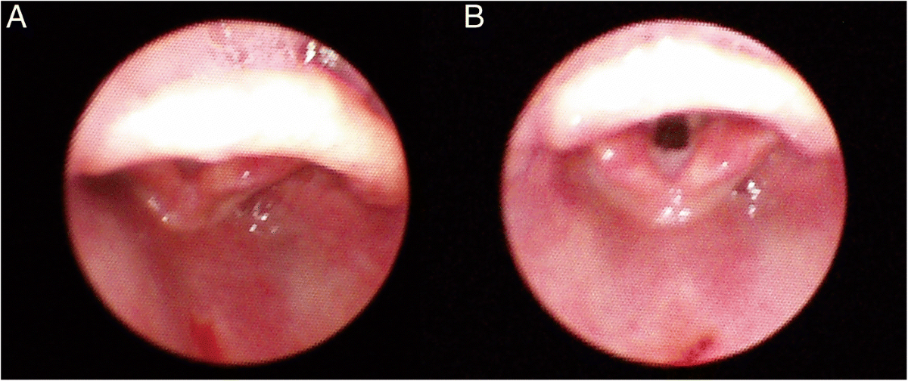
Description: Paired structures that control phonation and protect the lower airway. During laryngoscopy, they appear white and pearly, meeting at the anterior commissure with the arytenoid cartilages positioned posteriorly.
Function: Voice production, airway protection during swallowing, and regulation of airflow during respiration.
Description: Pyramid-shaped cartilages that anchor the vocal cords posteriorly and control their movement through intrinsic laryngeal muscles.
Function: Enable vocal cord abduction (opening) and adduction (closing) for breathing, phonation, and airway protection.
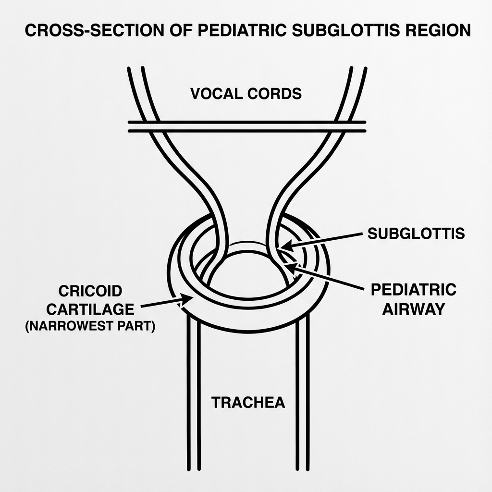
Description: The region below the vocal cords extending to the first tracheal ring. This is the narrowest part of the pediatric airway, bounded by the cricoid cartilage.
Clinical Significance: Most vulnerable site for airway obstruction in children due to its narrow diameter and complete cartilaginous ring that cannot expand.
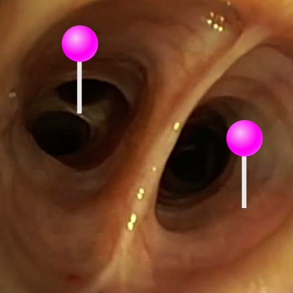
Trachea: A tubular structure supported by 16-20 C-shaped cartilaginous rings, with the posterior membranous wall completing the tube. Extends from the cricoid cartilage (C6 level) to the carina (T4-T5 level).
Main Carina: The bifurcation point where the trachea divides into the right and left main bronchi. It is a critical landmark during bronchoscopy and is highly sensitive, often triggering cough reflexes.
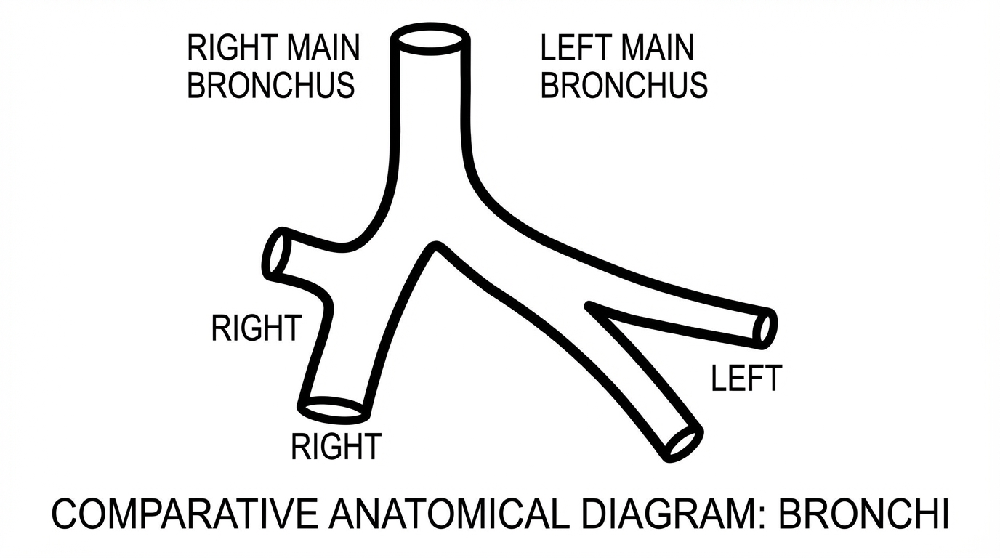
The right main bronchus is shorter, wider, and more vertical than the left, making it the more common site for foreign body aspiration and preferential intubation.
The right bronchial tree consists of three lobar bronchi (upper, middle, and lower) with a total of 10 bronchopulmonary segments.
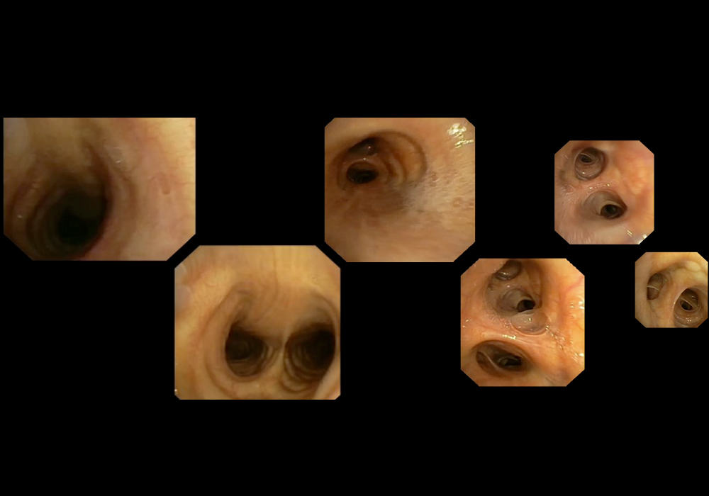
Complete visualization of the right bronchial tree showing the branching pattern from the main bronchus through all lobar and segmental divisions.
| Segment | Designation | Location |
|---|---|---|
| Apical | RB1 | Apex of the right lung |
| Posterior | RB2 | Posterior aspect of upper lobe |
| Anterior | RB3 | Anterior aspect of upper lobe |
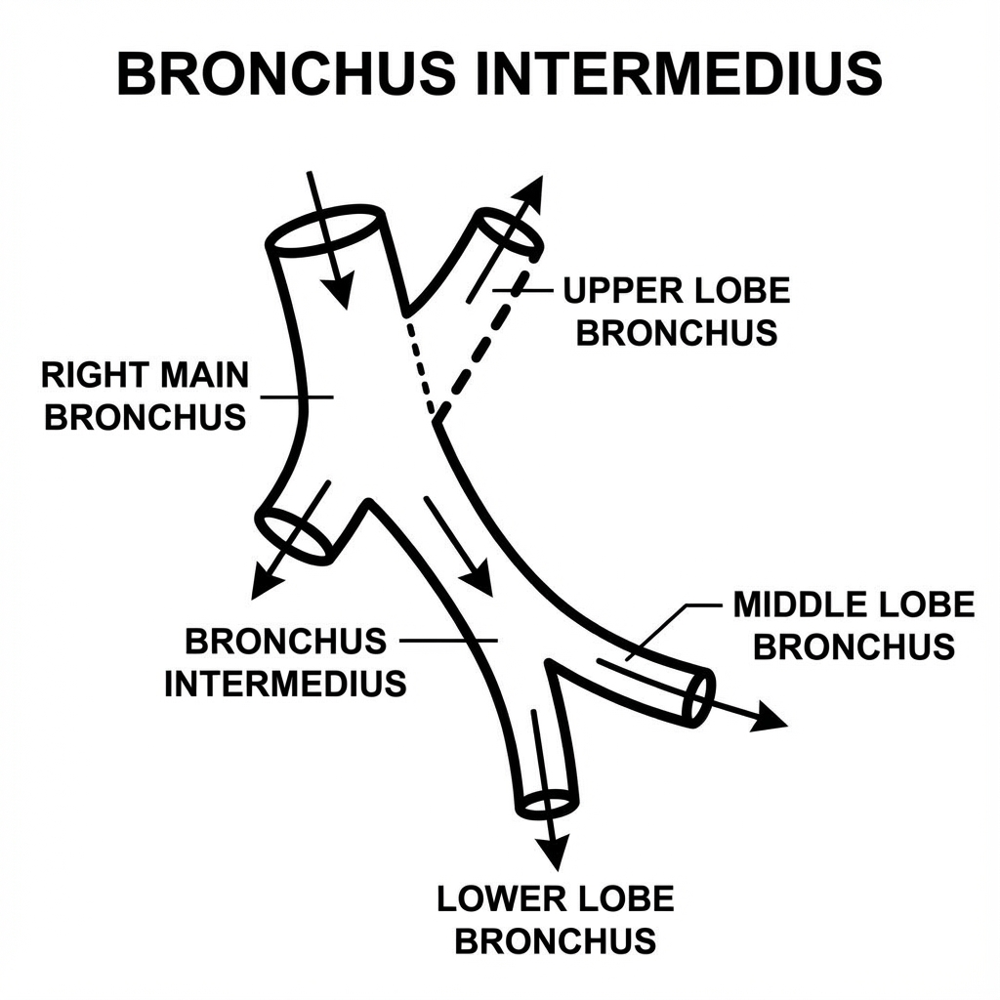
The bronchus intermedius is the continuation of the right main bronchus after the right upper lobe bronchus branches off. It subsequently divides into the middle and lower lobe bronchi at Carina 2 (RC2).
| Segment | Designation | Location |
|---|---|---|
| Lateral | RB4 | Lateral aspect of middle lobe |
| Medial | RB5 | Medial aspect of middle lobe |
| Segment | Designation | Location |
|---|---|---|
| Superior | RB6 | Superior segment of lower lobe |
| Medial Basal | RB7 | Medial base of lower lobe |
| Anterior Basal | RB8 | Anterior base of lower lobe |
| Lateral Basal | RB9 | Lateral base of lower lobe |
| Posterior Basal | RB10 | Posterior base of lower lobe |
The left bronchial tree consists of two lobar bronchi (upper and lower) with 8-10 bronchopulmonary segments, depending on anatomical variation.
Complete visualization of the left bronchial tree showing the branching pattern from the main bronchus through all lobar and segmental divisions.
| Segment | Designation | Location |
|---|---|---|
| Apicoposterior | LB1+LB2 | Combined apical and posterior segments |
| Anterior | LB3 | Anterior aspect of upper lobe |
| Segment | Designation | Location |
|---|---|---|
| Superior Lingular | LB4 | Superior portion of lingula |
| Inferior Lingular | LB5 | Inferior portion of lingula |
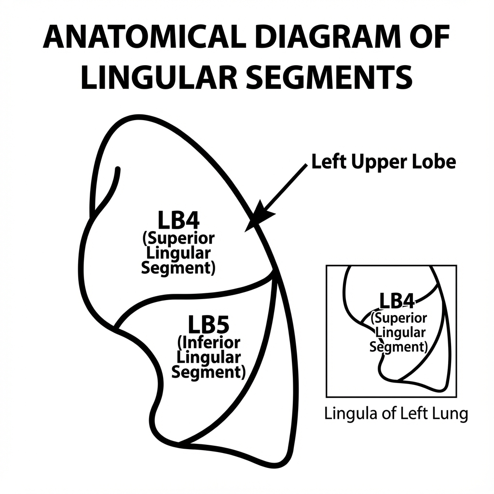
The lingula is the left lung's equivalent to the right middle lobe. It is part of the left upper lobe and consists of superior and inferior segments.
| Segment | Designation | Location |
|---|---|---|
| Superior | LB6 | Superior segment of lower lobe |
| Anteromedial Basal | LB7+LB8 | Combined anterior and medial basal segments |
| Lateral Basal | LB9 | Lateral base of lower lobe |
| Posterior Basal | LB10 | Posterior base of lower lobe |
The left main bronchus is longer and more horizontal than the right, passing under the aortic arch before dividing into lobar bronchi. This anatomical difference has important clinical implications for foreign body aspiration and selective intubation.
Understanding pathological variations of the airway is essential for accurate diagnosis and appropriate management. Below are common congenital and acquired airway abnormalities.
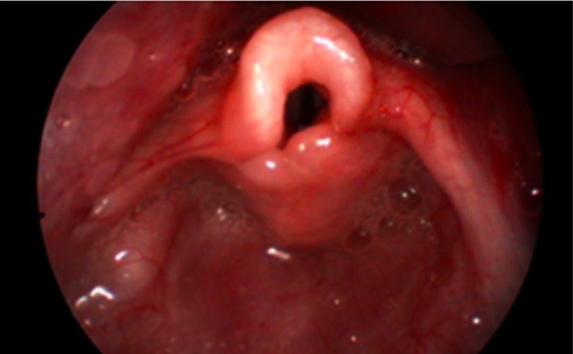
Definition: The most common congenital laryngeal anomaly, characterized by abnormal collapse of supraglottic structures during inspiration.
Clinical Features: Inspiratory stridor that worsens with agitation, feeding difficulties, and failure to thrive in severe cases. Usually presents within the first 2 weeks of life.
Bronchoscopic Findings: Omega-shaped epiglottis, shortened aryepiglottic folds, and prolapse of supraglottic tissues into the glottis during inspiration.
Management: Most cases resolve spontaneously by 12-24 months. Severe cases may require supraglottoplasty.
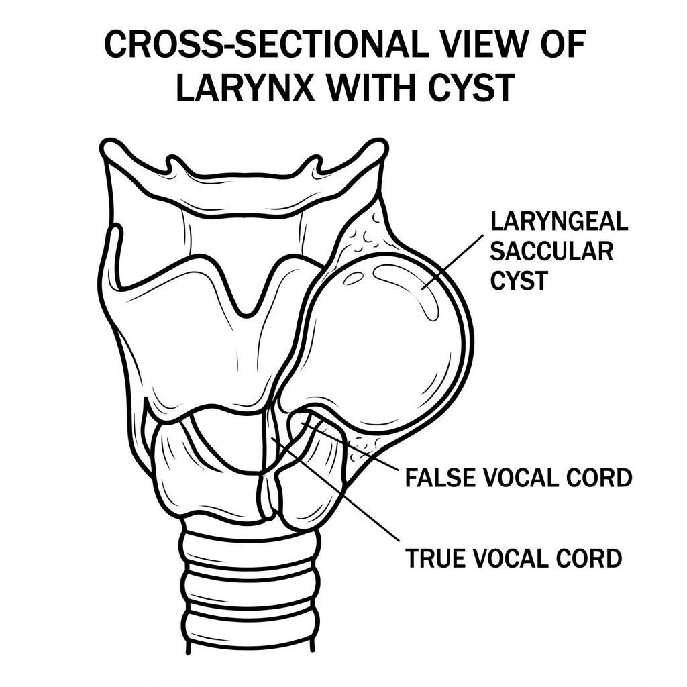
Definition: A fluid-filled cyst arising from the laryngeal saccule, which is a small pouch extending upward from the laryngeal ventricle.
Clinical Features: Hoarseness, stridor, dyspnea, and airway obstruction depending on size and location.
Bronchoscopic Findings: Smooth, rounded mass in the supraglottic region, typically lateral to the false vocal cords.
Management: Surgical excision via endoscopic or open approach, depending on size and extent.
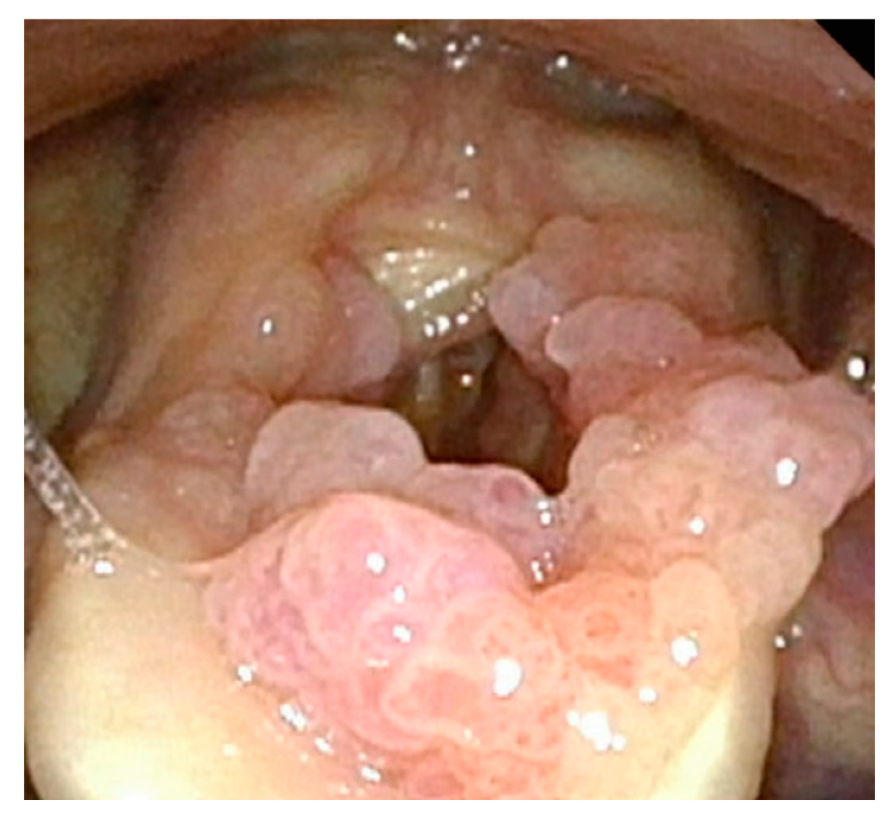
Definition: Benign tumors caused by human papillomavirus (HPV) types 6 and 11, most commonly affecting the larynx but can spread throughout the respiratory tract.
Clinical Features: Progressive hoarseness, chronic cough, stridor, and respiratory distress. Most common in children but can occur in adults.
Bronchoscopic Findings: Multiple warty, cauliflower-like growths on the vocal cords, false cords, and other laryngeal surfaces. Can extend to trachea and bronchi.
Management: Repeated surgical debulking (laser or microdebrider), adjuvant therapies (cidofovir, bevacizumab), and HPV vaccination for prevention.
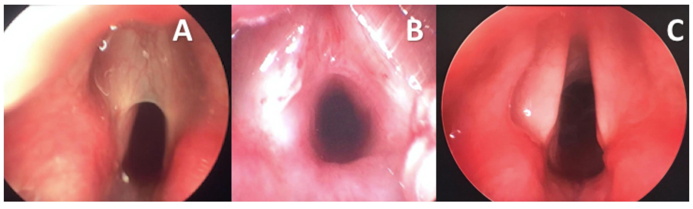
Definition: A membrane of tissue connecting the vocal cords, typically at the anterior commissure, resulting from incomplete recanalization during embryonic development.
Clinical Features: Severity depends on extent of web. Thin webs cause hoarseness; thick webs cause stridor and respiratory distress.
Bronchoscopic Findings: Tissue bridge connecting the anterior aspects of the vocal cords, varying in thickness and posterior extension.
Management: Thin webs may be divided endoscopically; thick webs require open laryngoplasty with keel placement to prevent re-adhesion.
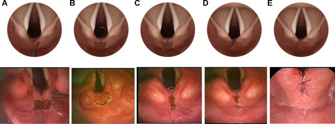
Definition: A rare congenital anomaly characterized by incomplete separation of the larynx and esophagus, resulting in a posterior midline defect.
Clinical Features: Aspiration, cyanosis with feeding, recurrent pneumonia, and chronic cough. Severity correlates with cleft extent.
Bronchoscopic Findings: Posterior midline defect between the arytenoids, with varying caudal extension.
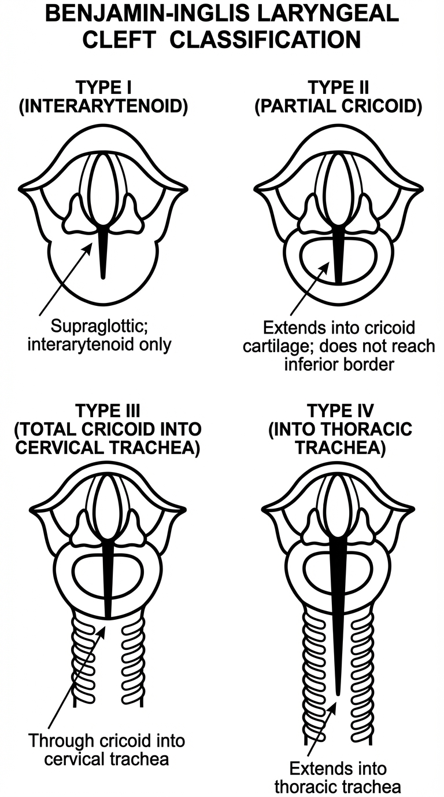
Management: Type I may be managed conservatively; Types II-IV typically require surgical repair.
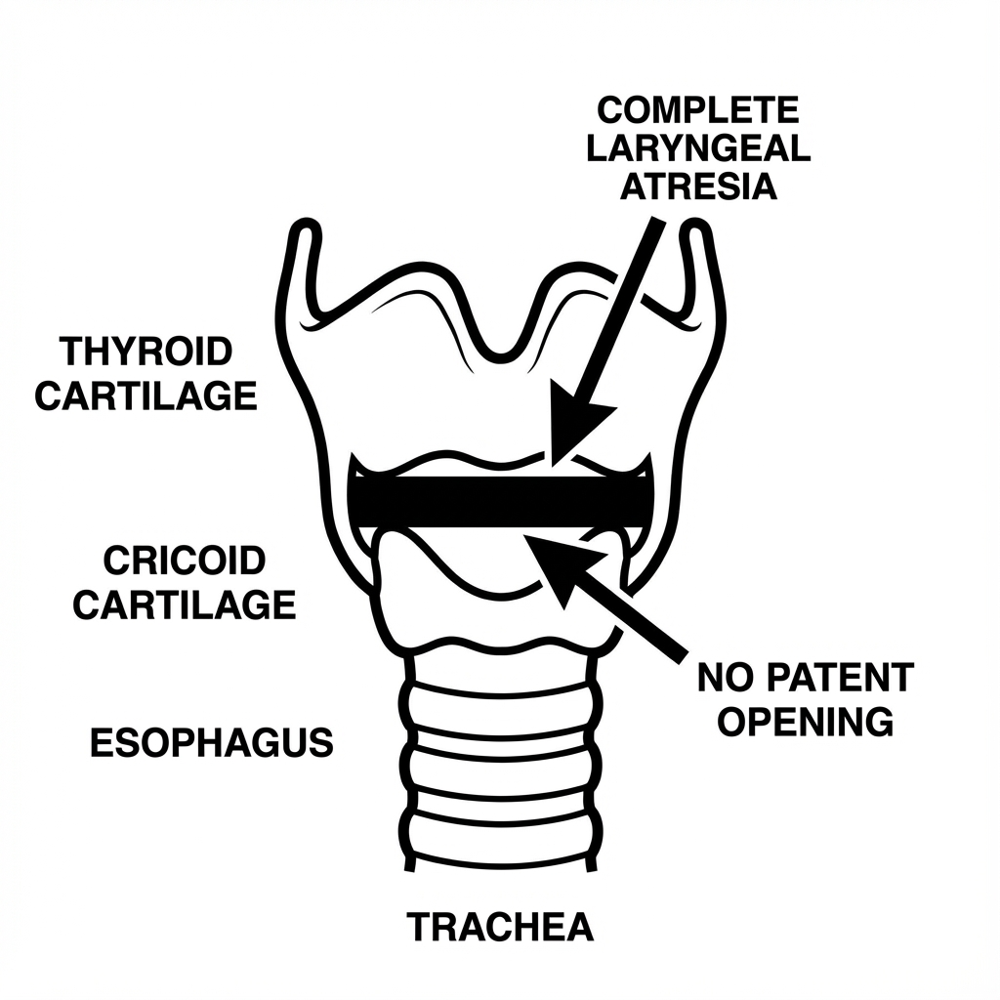
Definition: A rare and severe congenital anomaly characterized by complete or partial obstruction of the laryngeal lumen.
Clinical Features: Immediately life-threatening at birth with inability to establish an airway. Often diagnosed prenatally with ultrasound showing dilated airways and flattened diaphragm (CHAOS - Congenital High Airway Obstruction Syndrome).
Management: Requires EXIT (Ex Utero Intrapartum Treatment) procedure or immediate tracheostomy at delivery.
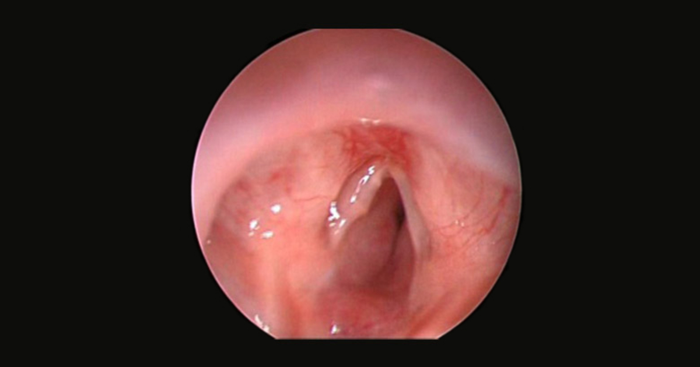
Definition: A benign vascular tumor of the subglottis, typically presenting in the first 6 months of life.
Clinical Features: Biphasic stridor, barky cough, and progressive respiratory distress. 50% of patients have cutaneous hemangiomas.
Bronchoscopic Findings: Compressible, bluish or reddish submucosal mass in the subglottis, typically asymmetric and posterolateral.
Management: Propranolol is first-line therapy. Severe cases may require laser therapy, surgical excision, or tracheostomy.
Definition: Narrowing of the subglottic airway, either congenital (third most common congenital laryngeal anomaly) or acquired (most commonly from prolonged intubation).
Clinical Features: Biphasic stridor, respiratory distress, recurrent croup-like symptoms.
Bronchoscopic Findings: Circumferential or eccentric narrowing of the subglottic region, with or without visible scar tissue.
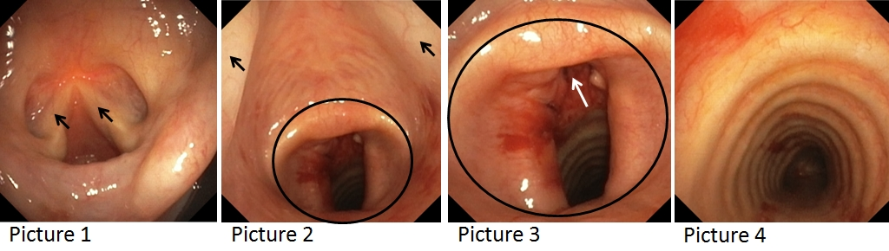
Management: Mild cases may be observed; moderate to severe cases require endoscopic dilation, laser therapy, or open laryngotracheal reconstruction.
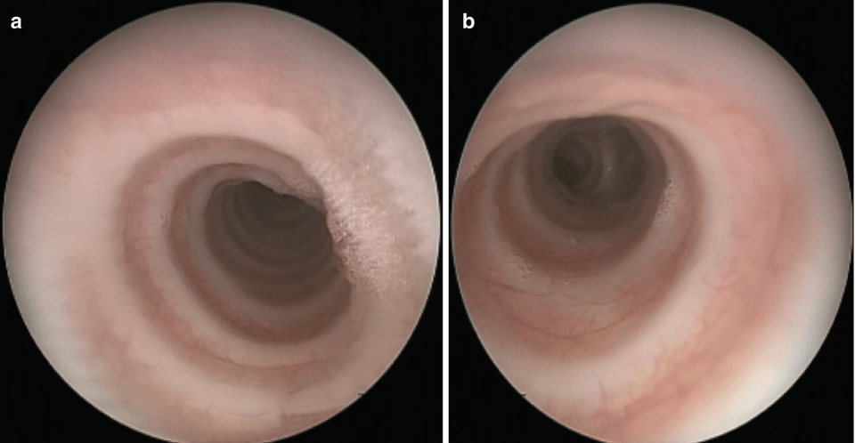
Definition: A congenital anomaly where the normally C-shaped tracheal cartilages form complete O-shaped rings, resulting in a fixed, non-distensible trachea.
Clinical Features: Stridor, recurrent respiratory infections, and difficulty with intubation. Often associated with other cardiovascular anomalies.
Bronchoscopic Findings: Narrowed tracheal segment with loss of the normal posterior membranous wall, appearing as complete cartilaginous rings.
Management: Mild cases may be observed; severe cases require slide tracheoplasty or tracheal resection with end-to-end anastomosis.
Definition: An abnormal connection between the trachea and esophagus, most commonly associated with esophageal atresia.
Clinical Features: Excessive salivation, choking with feeding, recurrent pneumonia, abdominal distension.
Bronchoscopic Findings: Fistulous opening visible on the posterior tracheal wall, typically at the level of T3-T4.
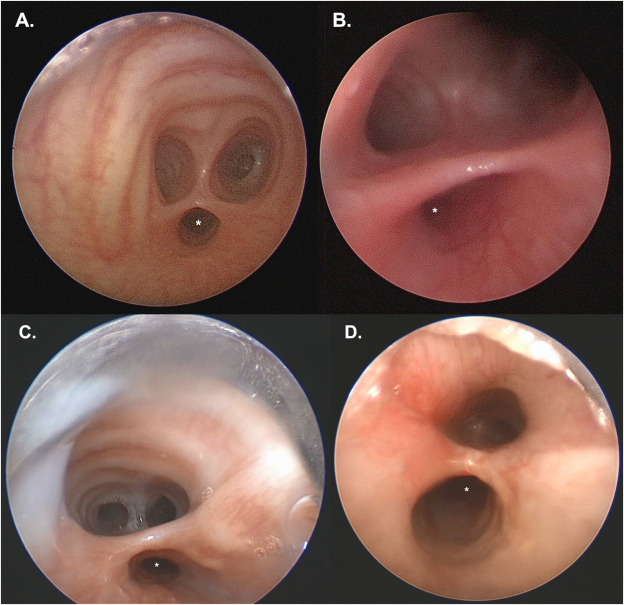
Management: Surgical repair via thoracotomy or thoracoscopy, with fistula ligation and primary esophageal anastomosis.
When evaluating airway pathology, a systematic approach is essential: assess the severity of respiratory compromise, identify associated anomalies, determine the need for immediate intervention, and plan appropriate long-term management. Multidisciplinary collaboration between otolaryngology, pulmonology, and anesthesiology is often required for optimal outcomes.